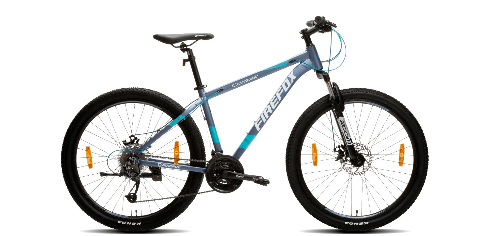
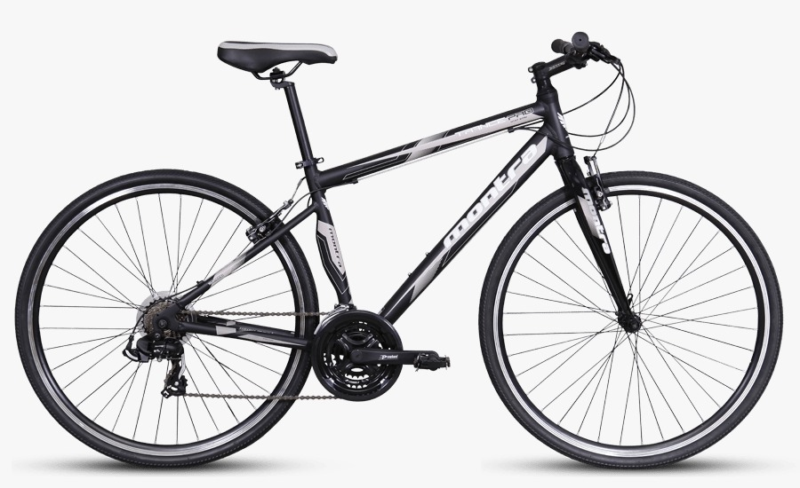
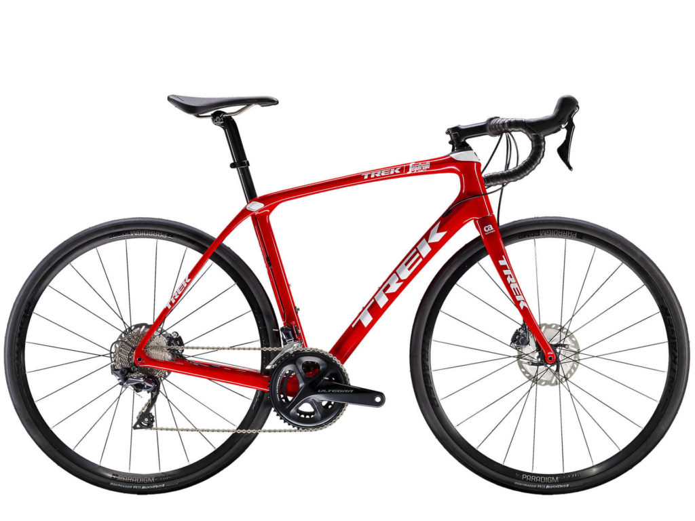
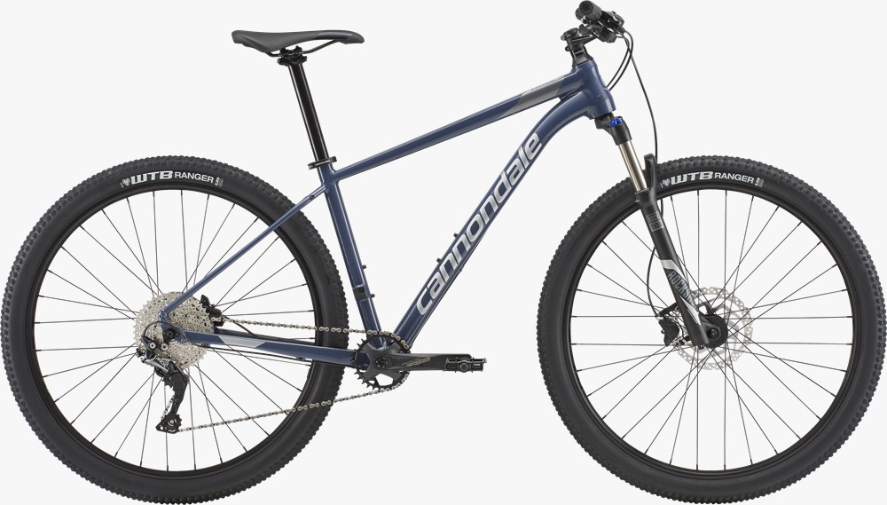
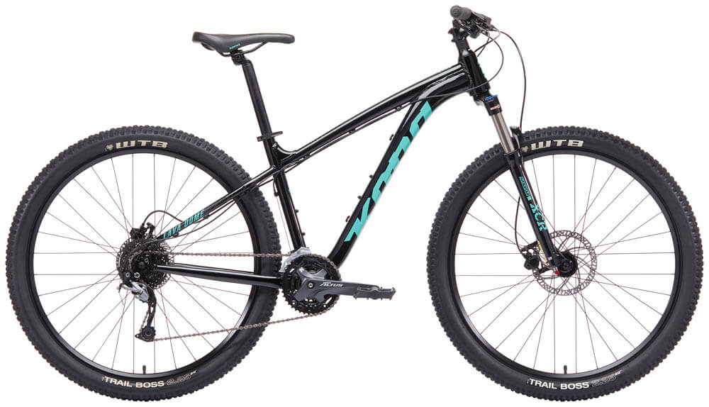
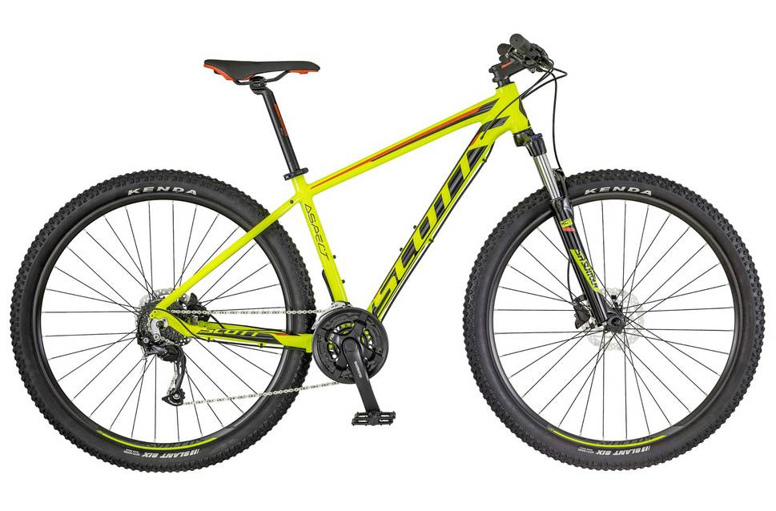
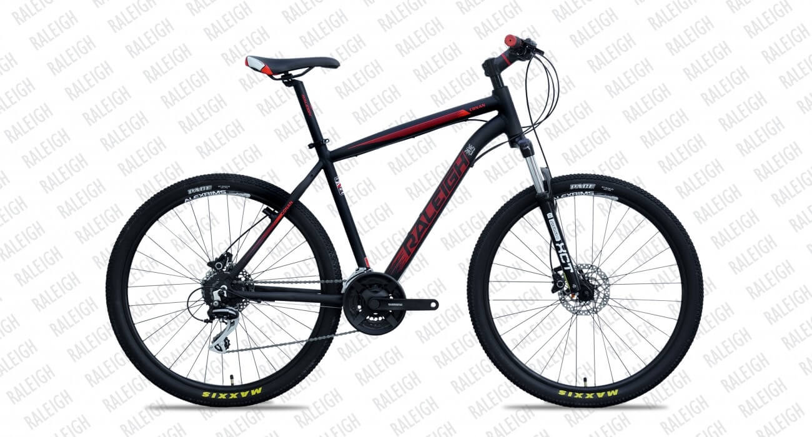
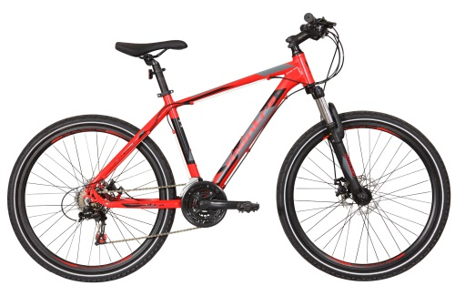
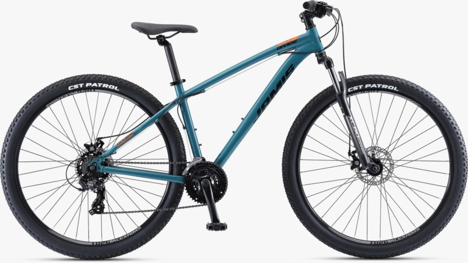
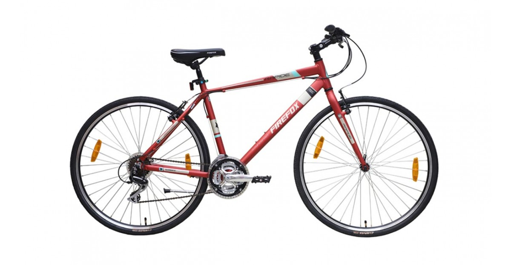

Top 10 popular cycles in every situation

Firefox Combat 27.5
An alloy hardtail bicycle that comes with 27.5 inch wheels, zoom alloy suspension
fork and Microshift gear system, the combat is a good entry level bicycle for beginners looking
to have fun.
Pros:
Comes with internal cabling
Reliable double walled rims
Cons:
Grips could be much better
Slightly on the heavier side

Montra Trance Pro INR 17,600
The Montra Trance pro is a good bet!
The 6061 alloy frame along with Shimano Tourney and Altus is a good combination for the cyclist
for are looking to get started with cycling!
Pros:
Double walled alloy wheels
Sturdy and versatile frame
Cons:
Steel rigid fork
No quick release on the rear

Trek Damone
The Trek Domane comes with Shimano Ultegra groupset, disc brakes and a full carbon
frame that will make you drool! This bike is a winner on our top 10 cycles in india list!
Pros:
Smooth ride quality
Value for money
Cons:
The wheels could be better

Cannonade Trail 4 INR 66,200 !
If you’re aware of the Brand Cannondale, you are surely aware of the trail series
that are very famous. The trail 4 is an ideal bike for those who are looking out for a
performance packed MTB. The bike comes with the latest 1x gearing combo the makes the drivetrain
super simple. However, the bike still offers a huge range of gears for acceleration and climbs.
Where can you buy it?
1. Track and trail store
Pros:
Strong and lightweight alloy frame
Smooth and quick Shimano SLX 1×11 derailleurs
Heavy treaded 27.5 tires
Cons:
Hard handlebar grip

Kona Lava Dome INR 41,699 !
The Kona Lava Dome is a bike that’s just like your best friend. You can ride it in
the dirt, poke around your neighbourhood and even get rough on the roads. Equipped with a
Suntour suspension fork and Shimano Altus and Alivio the bike is surely going to be your best
buddy!
If you’re not looking for a bike that’s meant for serious riding, the Lava dome is what you
need.
Pros:
Hydraulic disc brakes
Wheel size 29er
Cons:
NA

Scott Aspect 950: INR 40,500
Build in line to the Scott scale series, the Scott Aspect is reasonably priced and an efficient
hardtail mountain bike. It comes with Suntour XCT-HLO, Shimano FD M190 (front) and Shimano Altus
(rear).
Where can you buy it?
Bikeshark, keny cycles in Mumbai
Pros:
Well -designed frame
Comfortable geometry
Wide handlebar grips
Cons:
Groupset could have been better

Raleigh Cannon INR 32,925
Renowned brands that used to be popular in the early 18 and 19s, Raleigh is very
much alive in the Indian market. Hence, it’s no surprise it makes it to our list of top 10
cycles in India. The canon 27.5 gives a tough fight to other brands with its features like
aluminium alloy disc & V-Brake compatible, replaceable derailleur hanger, Raleigh suspension
with hydraulic lockout and more.
Pros:
Suspension with Hydraulic Lock Out
Replaceable Derailleur Hanger
Alloy Disc & V-Brake Compatible
Cons:
Crankset could be better

Montra Backbeat 27.5″ (2018) INR 18,700
If you are looking for a performance-focused hardtail MTB on a tight budget, the
Montra Backbeat 27.5” (2018) is an ideal choice to consider. The bike comes with disc brakes and
a decent Shimano groupset that qualifies it to make it to our top 10 cycles list.
Pros:
Well-treaded tyres for added grip
Mechanical front suspension lock-out
Shimano tourney shifters at the front and rear
Cons:
No quick release

Polygon Heist X2
Polygon’s heist is a durable urban bicycle that’s ideal for your off- road
adventure. Besides, it also offers a comfortable upright position that makes riding fun.
Pros:
Al6 aluminium frame
Great shimano groupset
Hydraulic disc brakes
Cons:
NA

Firefox Rapide 21s: INR 19,000
Excellent value for money, the Firefox Rapide 21s is a good entry level hybrid
that is equipped with a decent component at an aggressive price. It’s one of our personal
favourites and have recommended plenty of people who have a similar budget. The alloy frame bike
is equipped with rim brakes, rigid fork and Shimano Acera gears at the rear wheel is the major
reason why it makes it to our list of top 10 cycles in India.
If you’re looking to upgrade from a basic bicycle, the Rapide 21s is a good choice.
Giant